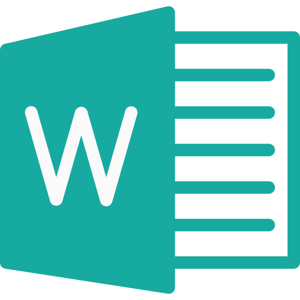

A Word-ről

Word
Ezt az év elején vettük Nagy Bendegúz Tanár úrral, és körülbelül egy hónap alatt átvettünk mindent ami kellett a projektmunkához.
A projektmunka az volt, hogy a tanulmányi osztálykirándulásról le kellett írni az élményeinket, valamint hogy melyik nap mi történt.
Kaptunk egy excel pontozást, amiben megkaptuk, hogy mi kell benne szerepeljen. Én élveztem ezt a tananyagot, mivel értettem belőle sok mindnet.